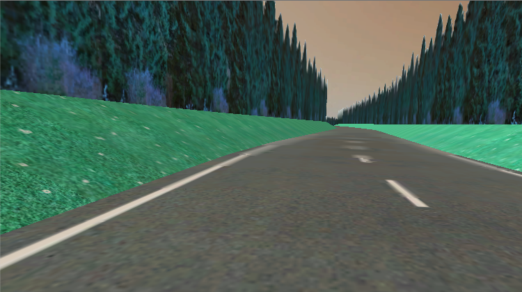
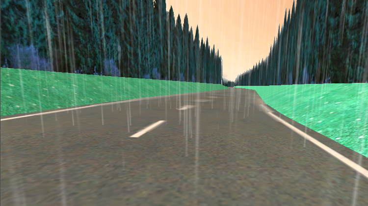
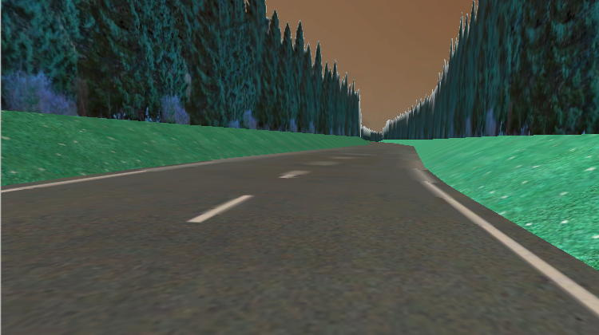
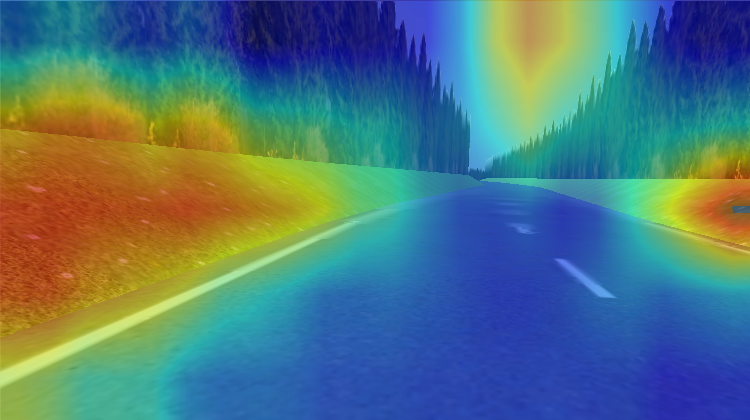
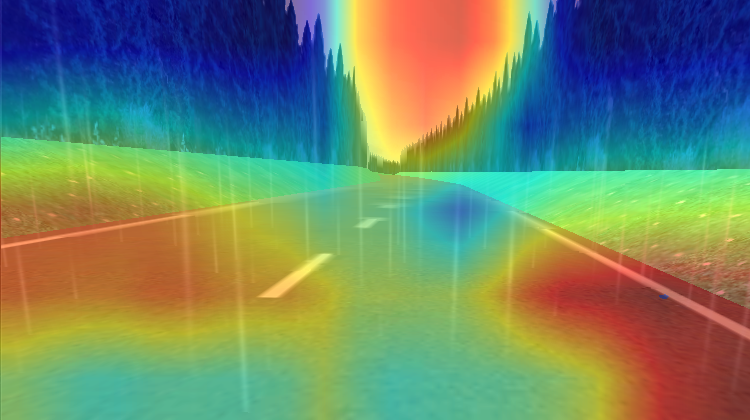
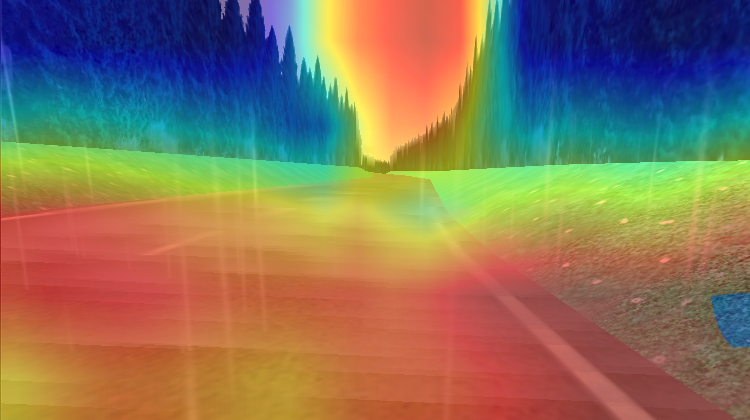
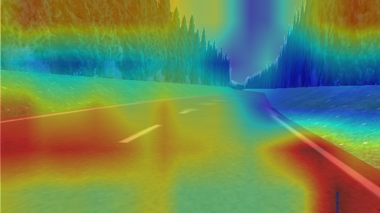

Grad-CAM: What Does a Self-Driving CNN See Under Domain Shift? (WiP)
Background
A few years ago, I trained a Convolutional Neural Network to predict the steering angles for a self-driving car. Recently, I revisited the project and extended it inside Unity3D, using a simulated environment to test how the network behaves under different visual conditions.
Instead of retraining the model, I kept the original CNN fixed and changed only the environmental scenarios. The goal was simple: How robust is a learned driving model when the world looks different?

Domain Shift in Self-Driving
Domain shift occurs when the data distribution seen during inference differs from the data distribution used during training. In self-driving systems, this problem is unavoidable. Weather, lighting, camera exposure, road materials, and atmospheric effects all change the visual appearance of the same physical scene.
The steering models are particularly sensitive to domain shift because, they rely directly on raw pixel input, and lack explicit semantic or geometric constraints.
We need to understand how a trained model adapts (or fails) when it encounters such domain Shifts.
|  |  |
 |
 |
Experimental Setup
The CNN used in this experiment was trained several years ago on a limited set of conditions: clear weather, consistent lighting, and relatively clean visuals on a long curved road. It follows a common architecture for self-driving research, stacked convolutional layers for spatial feature extraction, followed by fully connected layers that regress directly to a steering angle. I evaluated the same trained model across all different scenarios. Simulation Scenarios:
- Clear weather with good visibility
- Rainy Weather
- Rain with road smog
- Evening / low-light scene
What does the model see?
The model continued to produce steering angles under all scenarios, but raw predictions alone don’t say much about how the model is making decisions. This is where interpretability becomes essential. To gain insight into the models internal reasoning, I ran Grad-CAM alongside the steering predictions. Grad-CAM (Gradient-weighted Class Activation Mapping) is used in classification tasks, but it can also be adapted to regression problems like predicting steering angles. Instead of visualizing class-specific importance, Grad-CAM highlights which spatial regions of the image most influence the scalar steering angle.
My Observations
The Grad-CAM heatmaps shows that the model’s internal attention patterns changed across different domains.
Clear Weather:

Rainy Weather:

Rain with Road Smog:

Evening / Low-Light Scene:
